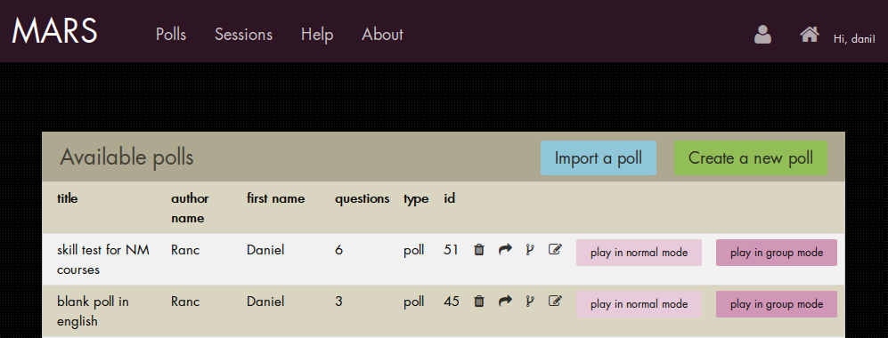
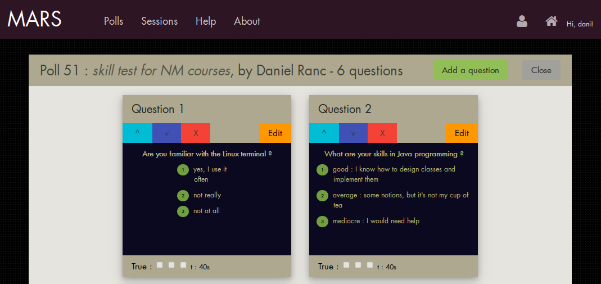
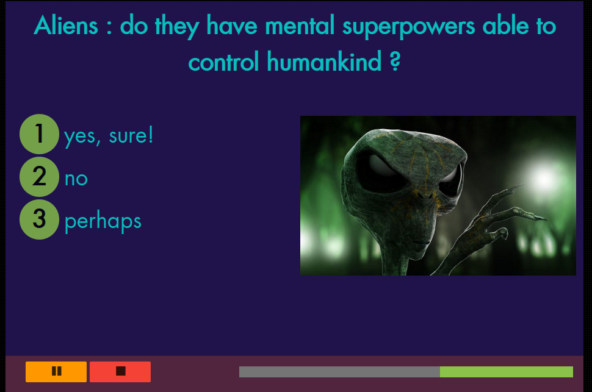
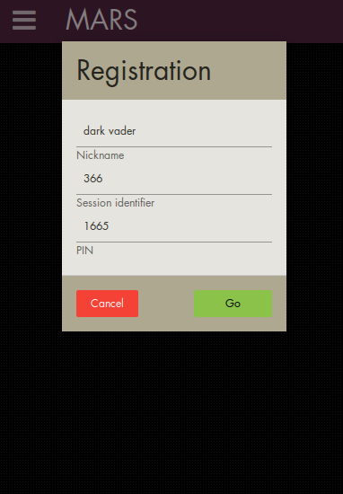
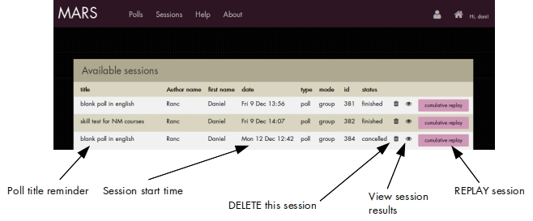
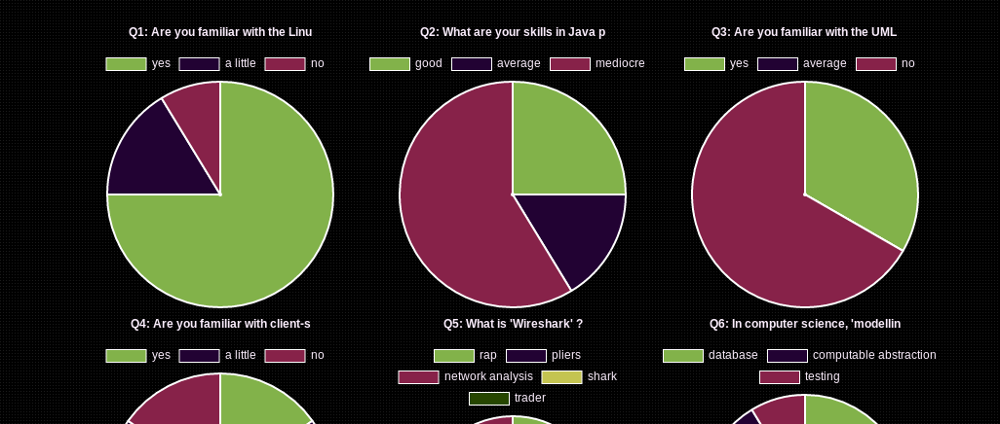

MARS documentation page
Introduction
MARS is a client-server
Audience Response System dedicated to e.g. teachers,
moderators to support their courses to evaluate knowledge, assess opinions or
illustrate concepts, or just for fun!
MARS is published under the GNU GPLv3 open source licence and is free. Polls
remain completely under your control and can be shared if, and only if,
you choose to do so.
MARS puts the control on the poll material back into your own hands, as opposed
to many online commercial products that take away from you the ownership as well as
the control over your intellectual property.
Screenshots
The UI design of MARS is inspired by contemporary flat looks.
It uses the w3.css kit, font awesome icons and a number of customizations.

- fig. 1: the poll list -

- fig. 2: the poll editor -

- fig. 3: the question editor -

- fig. 4: session in group mode as cast on videoprojector; remaining time is seen on
the live progress bar on the bottom -

- fig. 5: the client app during registration, on a smartphone -
Vocabulary
MARS uses following concepts:
- the poll
The poll is a set of questions. A poll can be created and edited in the system
and
can furthermore be exported/imported (easy JSON files) and shared e.g. via simple
email.
- poll types
Polls have a type that is determined at creation time depending
on the intention of the poll author. Two types are
defined:
- the quiz type
The quiz type of poll is preferred for evaluation purposes. Results
will display falsy/truthy answers and scores that
can be directly used for rating purposes.
- the poll type
The poll type of poll (sorry for redundancy) is preferred for
opinion assessment or situations where evaluation and scores are
not relevant. Results will just display choices without scoring.
- the session
The session is the live execution of a poll. Sessions consist of
question display and score/result evaluation. Sessions are stored and can be
retrieved and displayed later for testimony purposes. Moreover, sessions
can be re-played, providing cumulative result recording among
multiple student groups.
- the session play modes
Sessions can have one of two play modes determined at session start time :
-
the normal mode where students will see all
questions simultaneously on their client application, thus focusing
attention on their
terminals. The teacher screen will meanwhile display results, scores and answers
in real time. Session duration is under teacher's manual control.
-
the group mode where the teacher screen will display the questions
one at a time, so that student attention will be focused collectively
on the teacher screen. Their client application will only display
choice means for one question at a time. Realtime aspects are in the
foreground and question display duration as well as session duration are
automated and determined by the poll author during question editing.
Results and scores will be displayed at the end of the
session.
- roles and software applications
- the teacher role relies on the usage of the MARS manager
application.
- the student role is supported by the MARS client application
. The URL of this application is displayed at session start time for
all to see.
Poll management
Polls are managed via the Polls top menu bar option. The screen will
display a list of all available polls in your local system. The action icons
associated to any given poll will determine following activities :

Poll creation
To create a new poll, click on the green button labelled "create a new poll"
at the top of the list. A pop-up will appear where you can fill in the title
of the new poll, as well as choose (mandatory) the poll type (see definition
above : quiz or poll type). This will initialize a new, empty poll that will
be listed in the poll list. To create questions for this new poll, simply
click on its "edit" icon to launch the poll editor (see below).
Poll edition
The poll editor allows, much like a slide sorter in presentation software,
to add questions, to modify question ordering and to delete questions.
Each question composing the poll is depicted along with a number of action
buttons :

- the poll editor -
Add questions
To add a new question, click on the "add question" button on the top of the
poll editor. This will lauch the question editor with a new question (see below).
Move questions
To move questions use the "move-up/down" buttons as seen on the screenshot
above. Their effect is to move the related question one slot up or down
in the list of questions.
Delete questions
The DELETE button will remove the related question from the list. Be careful
as there is no coming back.
Edit questions
The EDIT button will lauch the question editor with the related question (see below).
Question edition
The question editor allows to completely define all aspects of a question,
including all texts, optionally an image illustration etc. All actions
on the editor are immediately reflected in a live preview.
Any question can have one of two available layouts: one column and two
columns. The two-colum layout allows to fit in additional text
and/or an image. Images are hosted externally (e.g. by image hosting sites).
More multimedia contents may be available in future
versions (sound, video).
The different options and actions are best explained by a
picture as well as personal experiments:

- the question editor -
Poll play
Reminder: polls can be played (i.e. run in front of a student group) in one of two
modes explained above: the group mode and the normal mode. The process of
poll play is called a session.
To start a new session with a given poll, see fig. 1 above : two buttons
allow to start a session in one of the two modes.
Session lifecycle
A session goes through following states:
- waiting: this is the initial state.
The session is started,
but waits for the participants to register on this session with their
terminals (i.e. smartphones). Of course this screen should be visible
to all via a videoprojector. The registration URL is indicated for
all to see., as well as the session id and a PIN used for client identification.
The status zone on the right shows in
realtime the number of enrolled students. When all students are enrolled, the
teacher can run the session by a click on the green start button:

- the session in waiting state (here, in normal mode) -
- running: this is the live execution of the session. Its shape
depends on the session mode:
- in normal mode the screen will stay like the picture
above, showing in realtime the results and scores of the students.
The teacher can hide the result area in order to avoid student
distraction. The students receive all poll questions at once on
their terminals. Students can actuate their answers as often as
they like. In normal mode the poll timing is entirely under
the teacher's control. A click on the red stop button will
terminate the run, the session reaching the "finished" state.
- in group mode, on the other hand, the session is
completely automated. The screen as showed above disappears and
instead, a countdown begins, after which the questions are
cast one at a time (see fig. 4 above) for the programmed duration
(see question editor above). After all questions have been cast,
the session terminates by showing the results. Its state becomes
"finished".
- finished is the state of a session having terminated
normally. Its results are stored and can be viewed later.
- cancelled is the state of a session having been terminated
manually by the teacher. Although such a session is recorded and
can even be restarted, its stored results are perhaps incomplete.
Any type of session in any mode is stored and can be viewed later, but also can be
restarted by means of the Session management interface (see below). This
allows to conduct a given poll among differents student groups, cumulating
the results.
Session management
Sessions are managed by means of the Session list interface, attained by the
"Sessions" button on the top menu bar.
Session list
The following picture summarizes actions related to the Session list:

Session results
Session results are available a) after a normal run in normal or group mode, the screen
shows already available results as calculated by the server; b) when selected
in the Session list through the "view" icon.
Session results have three parts from top to bottom:
- the score result table showing the results and scores. In a quiz
type of poll, results are red/green per person/per question and an individual
score is readily available. In a poll type, results are neutral.
- the raw data table which is hidden by default, but can be
viewed to discuss individual answers if so desired.
- the charts showing the results graphically, which is particularly
useful in the poll type.
The following picture shows a portion of the charts part in a real case:

User management
General principles
As of writing (v. 0.87) user management is simplified. Two user roles exist:
- the administrator who has the specific task of validating
new "vanilla" users. The validation process involves a) the candidate
user to register through the new user registration screen;
b) the system to send an email notification to the administrator in
which two links are provided, one for acceptance and one for refusal;
and c) in case of acceptance, the system to send a positive email notification
to the candidate. In the present version the administrator is
immutable (except if you cheat a bit in the database :-)) and is the
person having initiated the first login in the system.
- vanilla users who have no further responsibilities.
In all cases the system can only be used by persons having been through the
above approval process (and by the admin himself, of course) and authenticate
locally. This strategy
isolates MARS from the many possible external authentification methods (LDAP etc.).
Security considerations
Due to the particular http interface between clients and server in the MARS
system, man-in-the-middle attacks must be avoided by installing the system
on a HTTPS server.
MARS never sends out passwords in cleartext.
Techie section
MARS is a client-server application based on Angular (client side) and PHP
(server side). The database is PostGresql. The editor is Atom.